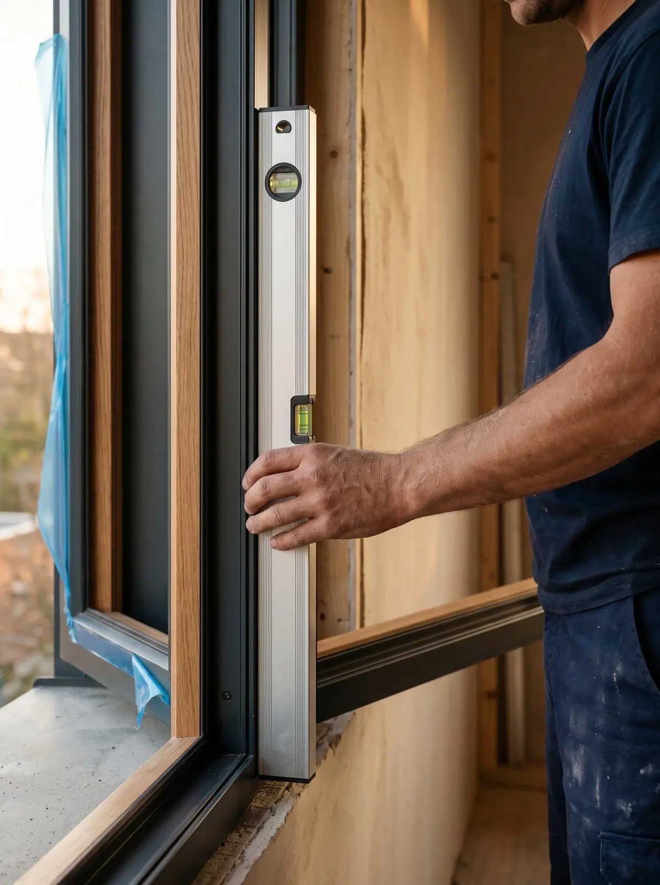

Posa certificata
La posa conta quanto l’infisso.
Se c’è un problema, torna chi l’ha montato.
Perché conta
Una posa non a regola d’arte porta muffa, condensa e contestazioni. Spesso chi installa è una squadra esterna, non abituata a montaggi di qualità.
Come lavoriamo
I nostri posatori sono dipendenti, formati e certificati (patentino EQF). Posano secondo la norma UNI 11673-1, che definisce come sigillare il giunto fra telaio e muro, come isolarlo e come proteggerlo dall'acqua.
A fine lavoro ti consegniamo il report di corretta posa, con le foto dei nodi: serve per la garanzia e per le pratiche fiscali.
Il nodo di posa
Quattro strati, una sola squadra.
- Sigillatura interna. Una membrana a tenuta d’aria e vapore, verso la stanza.
- Isolamento del giunto. Schiuma poliuretanica a bassa espansione o nastro autoespandente.
- Tenuta all’acqua. Una membrana traspirante verso l’esterno, che lascia uscire l’umidità.
- Report di corretta posa. Foto dei nodi, verbale di collaudo, documentazione per le detrazioni.
Posa perfetta, precisione e soprattutto pulizia dopo ogni sostituzione.Patrizia S. · Recensione Google
Domande frequenti
Quanto dura la posa?
Per un appartamento di solito pochi giorni. La data esatta te la diamo dopo il sopralluogo, con un margine.
Serve fare opere murarie?
Nella maggior parte delle sostituzioni no: posiamo sul vecchio telaio o sul controtelaio esistente. Se il vano è da rifare te lo diciamo al sopralluogo.
Dove installiamo
Dove installiamo
Da Vigano di Gaggiano a Milano Sud e Milano Ovest, con i nostri tecnici e i nostri posatori.

Showroom · Vigano di Gaggiano